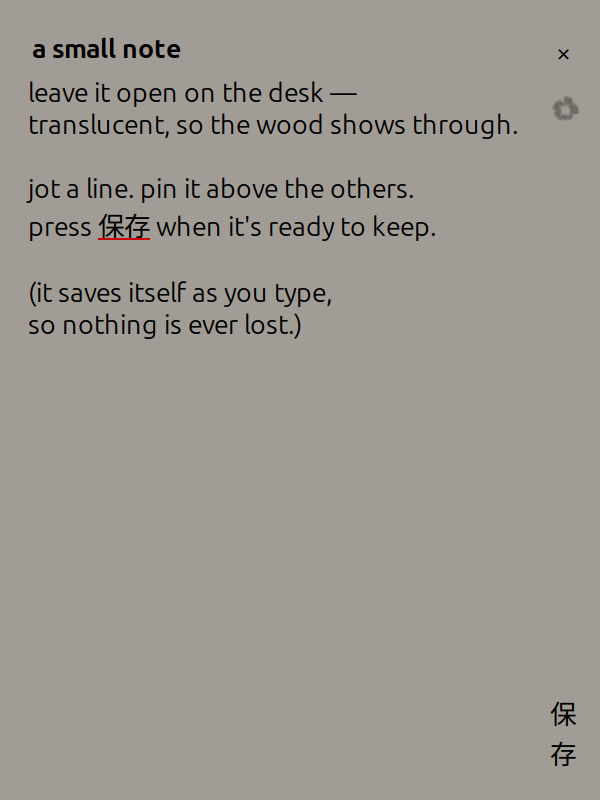

some projects
-
world-window
An add-on for the Hermes AI assistant. When your AI reads you the news, world-window shows the same story from different newspapers, each labelled left, centre or right by an independent rating site, with links so you can check for yourself. Made for the Hermes Agent Plugin Hackathon, November 2026, and now in the official Hermes plugin catalog.
-
filmmaking
Make a real video on your own machine—no generative video model required.
-
lace-notes
A translucent scratchpad for the Linux desktop: borderless, auto-saving, with the wallpaper showing through.
